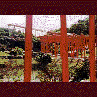

高山稲荷神社/青森県西津軽郡車力村 
津軽半島の日本海側に車力村というところがある。十三湖ぐらいが取り柄のこの辺鄙な村に何故こんな立派な、と思うくらいの神社がある。
その名は高山稲荷。その歴史ははっきりぜず、江戸時代からの神社らしい。
しかし現在の本殿は比較的新しく、詳しいことは知らないが恐らく神社復興百周年事業などというイベントをやってたのでその頃のものなのだろう。多分。
まあ、本殿のことはどうでもいいか。問題はその本殿の裏手なのだ。ここの本殿は鬱蒼とした小山の上にあるのだが、その裏手を見下ろすと、アラびっくり、下には広大な日本庭園があるのだ。そこには庭石や池などが配され、そのド真ん中にくねくねと真っ赤な鳥居が並んで建っているのだ。
普通神社の鳥居って鬱蒼としたところにあるじゃないですか。それが芝生の公園みたいなとこの真ん中にあるもんだから、鳥居の列というより何かのオブジェみたい。これじゃあ昼間のストリッパーだわいなあ、などと思いつつも鳥居を抜ける。200本位だったか。そこは小高い丘の上だった。
その丘の脇には無数の狛犬ならぬ狛狐が並んでいる。どこか他の神社でいらなくなったものを引き取ってきたのだろう。小さな小屋の中にはびっしりとお狐さんが納められていた。
さらに先を見下ろす。池のほとりに何やら怪しげなバラックが立ち並んでいる。しかしそれがただのバラックではないことはすぐにわかった。それらはみんな廃棄された神社の祠の群れだったのだ。
棄てられた神様の大集落だ。近寄って見てみる。廃虚と化した祠の中にはたくさんのお狐さんがいる。このお狐さんにもいろんなバリエーションがあって中には手拭を頭に巻いているものや異様に目つきの悪いのなんかもいて結構怖い。さらに奥のほうに進んで行くと、祠だけでなく物置程度の小屋もありその中には人より大きな得体のしれない人形などが恐ろしい顔つきでガンをとばしたりしている。
それらが皆、棄てられた恨み辛みを私に語っているようでちょっとつらかったよ。
1997.8.
珍寺大道場 HOME